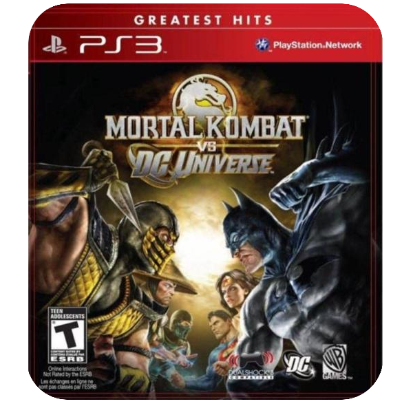
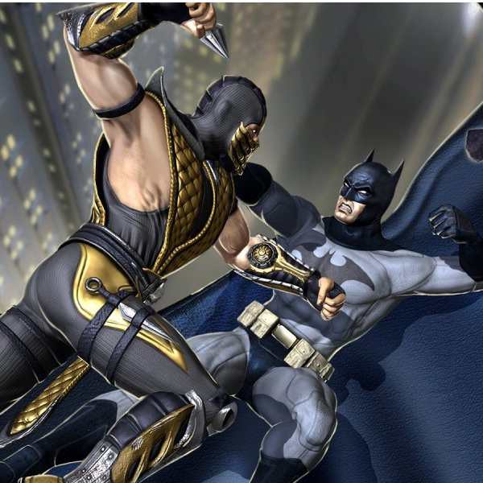
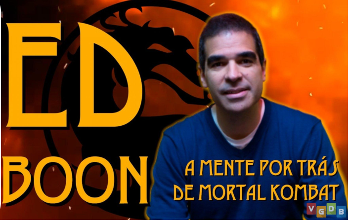

Desenvolvimento do jogo
Mortal Kombat vs. DC Universe foi o último projeto da Midway Games antes de pedir falência e vender os direitos para a Warner Bros. Interactive Entertainment em 2009. Em fevereiro de 2007, a Midway Games anunciou que estava planejando um novo jogo da franquia Mortal Kombat , inspirado em uma exibição de Gears of War . " Mortal Kombat 8 " teria sido "sombrio, corajoso, sério" e um " reboot de volta ao básico " da série. Eventualmente, durante o processo de planejamento, um acordo com a DC Comics foi feito e este projeto foi cancelado, levando ao desenvolvimento de um jogo diferente. Um anúncio em abril de 2008 confirmou o jogo como um crossover , e um trailer foi lançado. O único aspecto notável que permaneceu do projeto original foi o uso do Unreal Engine 3 , também usado em Gears of War .
O uso de uma licença DC impôs algumas restrições à violência característica nos jogos Mortal Kombat . Mortal Kombat vs. DC Universe foi, portanto, restrito a uma classificação ESRB "Teen" . Portanto, certos Fatalities, como "Spine Rip" de Sub-Zero, foram excluídos ou substituídos devido à sua natureza gráfica. Para manter essa classificação, dois dos Fatalities no jogo foram censurados na América do Norte . Na versão do Reino Unido , tanto o Coringa quanto o primeiro Fatality de Deathstroke os retratam finalizando seu oponente com um tiro na cabeça, ambos mostrados sem cortes à distância. A versão norte-americana tem a câmera rapidamente se movendo em direção ao vencedor antes que o tiro seja disparado, cortando assim a vítima completamente do tiro. Além disso, um dos Fatalities de Kitana que envolvia empalar o oponente na cabeça e no tronco com suas fanblades foi modificado para que ambas as fanblades empalassem o peito de seu oponente.
De acordo com entrevistas, os personagens foram escolhidos por sua popularidade e por paralelos entre eles de ambos os universos. Ed Boon , diretor criativo de Mortal Kombat vs. DC Universe e co-criador da franquia Mortal Kombat , disse que algumas das habilidades dos personagens, especialmente aquelas do DC Universe, foram atenuadas para torná-las equilibradas dentro de Mortal Kombat vs. DC Universe . Por exemplo, Boon mencionou especificamente que o Superman se tornou vulnerável por causa da magia. Boon revelou que dois novos personagens foram desenvolvidos como conteúdo para download, Quan Chi de Mortal Kombat e Harley Quinn da DC Comics, mas foram descartados. Ele também havia sugerido anteriormente a perspectiva de Kung Lao e Doomsday serem personagens para download.
Para o lançamento da Kollector's Edition de Mortal Kombat vs. DC Universe , uma nova capa foi criada por Alex Ross . Também incluída na Kollector's Edition está uma prequela de história em quadrinhos de 16 páginas, Beginnings , que foi ilustrada pelo co-criador de Mortal Kombat, John Tobias .
[ foto ]O jogo apresenta um modo de história de quatro horas de duração, totalmente capturado por movimento e dublado, tornando-se um dos primeiros jogos de luta a tentar algo assim. Ed Boon lançou a ideia para os artistas, animadores e produtores da Midway Game, que inicialmente não estavam dispostos, alegando que achavam que era desnecessário e impossível. Exigia tecnologia e conhecimento que não estavam disponíveis naquela época, como a capacidade do jogo de transmitir um vídeo enquanto carregava os dados necessários para a próxima luta. A equipe também não estava convencida da ideia de fãs de jogos de luta que queriam um "modo história" inspirado em filmes. A crise financeira da Midway também contribuiu para essa tomada de decisão. A equipe lançou alternativas à ideia de Ed Boon, como imagens estáticas acompanhadas de música e diálogos dublados, "como você veria em algumas apresentações de quadrinhos sofisticadas". Essas alternativas frustraram Boon e ele usou sua autoridade para forçar a equipe a desenvolver seu discurso como ele imaginou.
[foto]De acordo com Ed Boon, a equipe foi vendida após completar uma única transição de cena para o jogo e para fora do jogo. Muitos trabalhadores da Midway tinham conjuntos de habilidades em cinema, roteiro e animação que finalmente puderam utilizar. A DC Comics também ajudou empregando dois escritores, Jimmy Palmiotti e Justin Gray, então a Midway manteria a caracterização dos personagens da DC consistente. Garantindo que a Midway não divergisse do que os personagens da DC normalmente diriam ou fariam. O trabalho feito para o modo história de Mortal Kombat vs. DC Universe acabaria sendo visto em futuros jogos Mortal Kombat , como Mortal Kombat 9 , e a futura série Injustice , desenvolvida pela Netherrealm Studios a partir das cinzas da Midway Games. Ed Boon viu o modo single-player como uma grande fonte de apelo para fãs casuais que, de outra forma, não teriam prestado atenção a um jogo de luta.
[video]